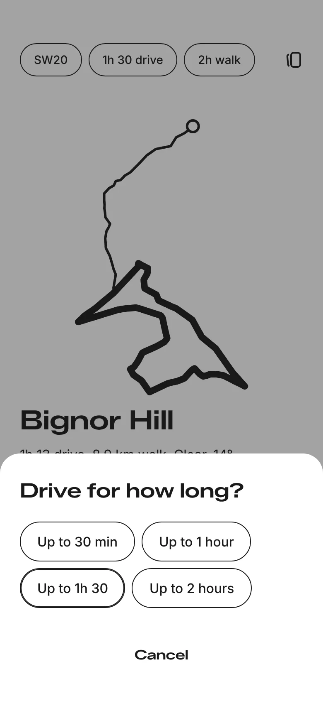
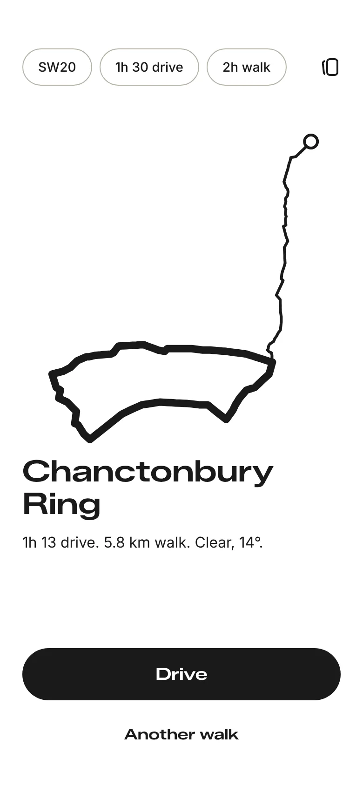
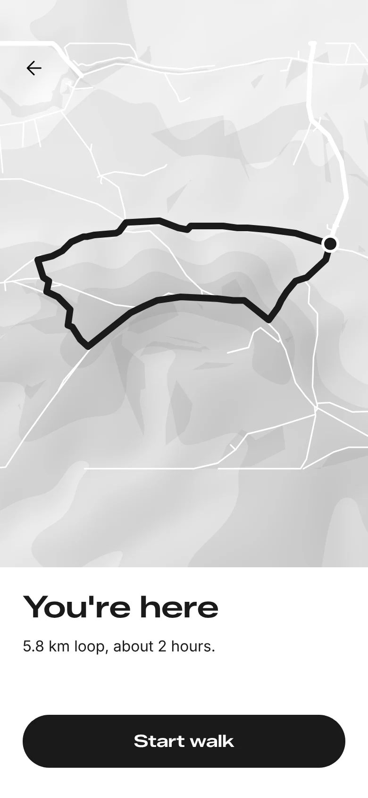
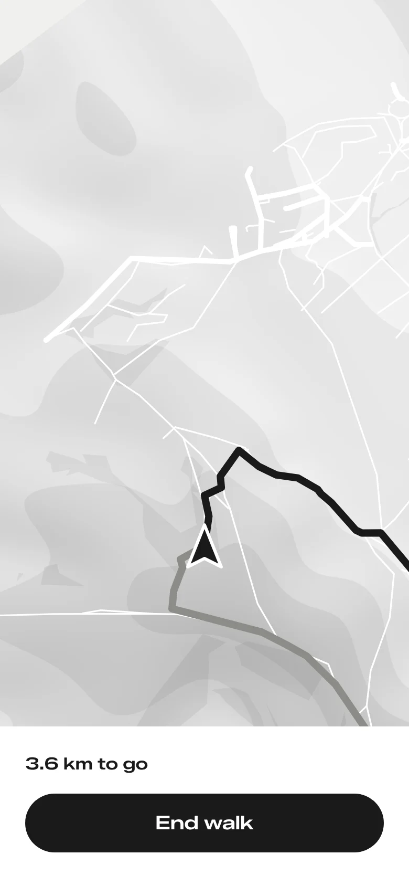
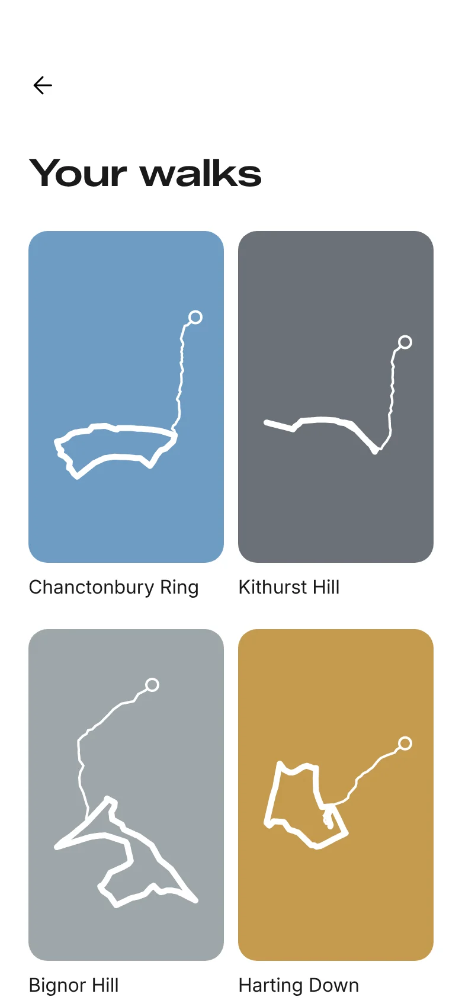

Less app.
More walk.
Choosing a walk shouldn’t take longer than the walk. Woden picks one you’ve never done, so all you have to do is go.
No set-up
Open it and today’s walk is already there. Change where you set off from, how long you want to drive or how long you want to walk, and it finds another.

Discover somewhere new
Not a list of 400 trails to scroll through, just one walk, picked for the day and its weather.

Google gets you there
Woden sends the route to Google Maps and ends it at a free car park.

Maps you hardly need
Once you’re walking, the map turns with you, so the way ahead is always up. It’s black and white, with the hills shaded the way Ordnance Survey used to. Glance at it if you’re unsure. Otherwise follow the signs and look up.

Keep the day
No questions at the end, just one picture of your day: the drive and the walk as a single line. Its colour comes from the weather on the walk. Cold days come out blue, warm days gold, and cloud or rain makes it darker. Keep it as a wallpaper, then head home or let Woden pick a pub nearby.

Drive. Walk.
Rest.
Woden’s a concept for now. If you would use it, or wouldn’t, I would love to hear why.
Tell me what you think